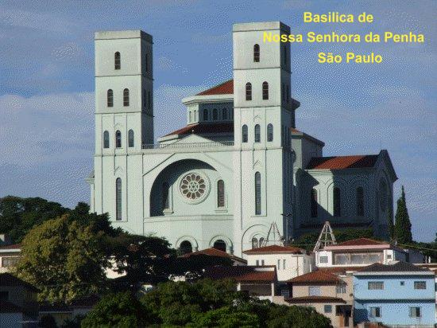
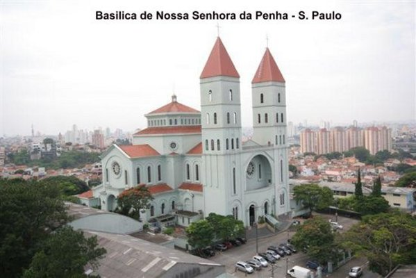
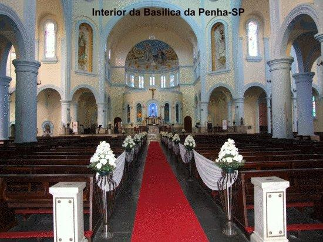
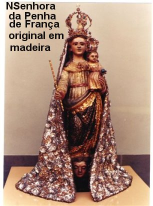
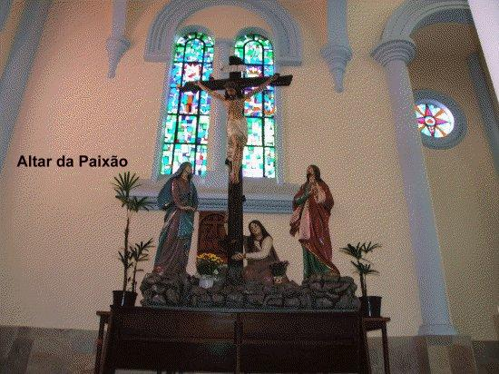
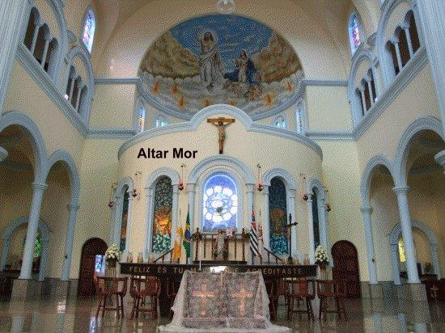
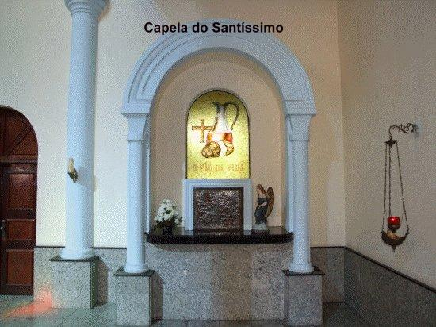

EM SÃO PAULO
HISTÓRIA
Nos anos de 1600, um católico
francês viajando para São Paulo, carregava na bagagem uma imagem de NOSSA
SENHORA trazida de sua terra natal. À noite, montou
acampamento no morro Aricanduva, na região onde hoje se estende o Bairro
da Penha, na zona leste da cidade. Pela manhã reuniu seus pertences e retomou
a caminhada. No entanto, à noite já na direção de Jundiaí, percebeu que
a imagem havia desaparecido. Então, voltou ao local anterior, no morro
Aricanduva, e a encontrou no alto da colina onde havia dormido. Aliviado,
seguiu viagem, mas na noite seguinte percebendo novamente a ausência da imagem,
retornou outra vez à mesma colina e lá encontrou a preciosa imagem da MÃE DE
DEUS. Então o devoto entendeu que se tratava de algum aviso, o qual
despertou sua atenção para entender o desejo da VIRGEM, concluindo que Ela
queria fosse erguida ali uma Ermida em sua homenagem. Procurando conversar
com as pessoas que viviam na região e se interessando em satisfazer a vontade de
NOSSA SENHORA, se empenhou corajosamente e venceu todas as dificuldades e
incompreensões, edificando um pequeno e rústico Templo, onde colocou a imagem.
Em seguida, fez questão de visitar os moradores das proximidades e comunicar o
fato, fornecendo a todos, o endereço da pequena residência da MÃE DE DEUS.
noite, montou
acampamento no morro Aricanduva, na região onde hoje se estende o Bairro
da Penha, na zona leste da cidade. Pela manhã reuniu seus pertences e retomou
a caminhada. No entanto, à noite já na direção de Jundiaí, percebeu que
a imagem havia desaparecido. Então, voltou ao local anterior, no morro
Aricanduva, e a encontrou no alto da colina onde havia dormido. Aliviado,
seguiu viagem, mas na noite seguinte percebendo novamente a ausência da imagem,
retornou outra vez à mesma colina e lá encontrou a preciosa imagem da MÃE DE
DEUS. Então o devoto entendeu que se tratava de algum aviso, o qual
despertou sua atenção para entender o desejo da VIRGEM, concluindo que Ela
queria fosse erguida ali uma Ermida em sua homenagem. Procurando conversar
com as pessoas que viviam na região e se interessando em satisfazer a vontade de
NOSSA SENHORA, se empenhou corajosamente e venceu todas as dificuldades e
incompreensões, edificando um pequeno e rústico Templo, onde colocou a imagem.
Em seguida, fez questão de visitar os moradores das proximidades e comunicar o
fato, fornecendo a todos, o endereço da pequena residência da MÃE DE DEUS.
A notícia se espalhou e chegou
ao conhecimento do Padre Jacinto Nunes Oliveira, filho de um dos primeiros
habitantes daquela região paulista. Ele foi ao local e vendo a imagem, conversou
com o católico francês. De comum acordo decidiram transferi-la para uma pequena
Capela existente no povoado, a qual na continuidade passou por diversas reformas,
transformando-se numa Igreja modesta, mas confortável, sendo conhecida com o
nome de Igreja de NOSSA SENHORA DA PENHA DE FRANÇA.
Não é conhecida a data de construção
do templo. O registro que existe na Igreja informa o ano de 1682, mas existem
documentos indicando que na verdade, a obra foi edificada alguns anos antes.
Isto por que, a Paróquia possui um recibo passado por um padre quando recebeu
uma quantia em dinheiro doada a NOSSA SENHORA DA PENHA DE FRANÇA, com data de 24
de agosto de 1667. Mais importante, todavia, é que o fervor religioso do povo cresceu
e todos sentiam um imenso prazer em frequentar a Igreja e prestar homenagens a MÃE DE
DEUS ali representada por aquela imagem de madeira. Esta realidade trouxe como
consequência o crescimento do Bairro, que naturalmente, foi-se expandindo ao
redor do Templo.
Entretanto, em 1687, o Bispo Dom
José de Barros Alarcão, quis transferir a imagem de NOSSA SENHORA para um
recolhimento, um local mais reservado na Diocese, mas as mulheres do Bairro se
revoltaram com firmeza e não permitiram. A Padroeira NOSSA SENHORA DA PENHA DE
FRANÇA permaneceu ali, no mesmo lugar.
Nasceu e robusteceu nos cristãos
uma profunda e especial amizade a VIRGEM MARIA, e Ela retribuiu prontamente,
de maneira extraordinária e admirável, intercedendo de maneira eficaz junto ao seu
Divino FILHO JESUS, conseguindo um impressionante manancial de graças para todos
que suplicavam e pediam benefícios necessários a sua existência.
A IMAGEM DA SANTA
 A imagem original da VIRGEM é de madeira,
e está preservada até hoje, protegida no altar da Basílica nova, construída
entre 1957 e 1967, a alguns metros da primeira Igreja.
A imagem original da VIRGEM é de madeira,
e está preservada até hoje, protegida no altar da Basílica nova, construída
entre 1957 e 1967, a alguns metros da primeira Igreja.
A imagem de NOSSA
SENHORA DA PENHA DE FRANÇA está trajando um vestido dourado, ornamentado com
florões dourados em tonalidades dégradé, um manto branco rendado envolve a cabeça
e desce até os pés; usa uma linda coroa de ouro e na mão direita um Terço de
contas brancas; o braço esquerdo ampara o MENINO JESUS, que veste uma roupa
dourada, usa uma coroa de ouro e na mão esquerda segura um globo terrestre. A
mão direita está ligeiramente elevada, como se esboçasse um gesto, convidando
as pessoas ao Amor a DEUS.
Conta-se que o Bairro
foi fundado pelo Padre Jacinto Nunes Oliveira por volta de 1667. E pelo fato
do Bairro ter se formado em torno da Igreja, ainda hoje a religiosidade é
uma característica marcante na população local. A tradicional procissão
realizada na Festa da Natividade da VIRGEM MARIA, no dia 8 de setembro,
reúne milhares de pessoas que carinhosamente vêm prestar homenagens a
MÃE DE DEUS.
O ANTIGO SANTUÁRIO
A primitiva Igreja cuja reforma foi
realizada entre os anos 1774 e 1801, foi construída em estilo colonial simples,
em taipa de pilão, com paredes de 1,10 m de espessura, e serviu de Matriz
por muitos anos, sendo elevada em 20 de julho de 1909 a Santuário Arquidiocesano
de São Paulo pelo Arcebispo, Dom Duarte Leopoldo e Silva. É o primeiro Santuário
da cidade de São Paulo.
Desde o início, este local se tornou
centro de peregrinação e visitação. Consta dos registros a vinda de Dom Pedro I,
que pernoitou na Penha, e, no dia seguinte, depois de participar da Santa Missa,
seguiu para Santos, e 14 dias depois, proclamou a Independência do Brasil às margens
do Rio Ipiranga. Em 1886, Dom Pedro II veio a São Paulo juntamente com sua esposa,
a Imperatriz Teresa Cristina Maria; o casal visitou a Igreja da Penha.
Em 25 de agosto de 1904, o Padre Antônio
Benedito de Camargo, vigário da Paróquia, escrevendo no livro do Tombo, ao referir-se
à Igreja da Penha consignou, de próprio punho o seguinte:
“É soberba, edificada sobre
um alto, e a povoação num descampado inteiramente plano onde sopram todos os ventos,
que mantém a população isenta de moléstias. É esta Igreja procurada continuamente por
convalescentes, como espécie de sanatório de onde depois eles saem sãos e robustos,
cheios de vida. É raro, por isso, aparecer entre os habitantes daqui moléstias de
caráter grave”.
Coube aos padres redentoristas preparar
o ambiente espiritual para que a Igreja da Penha se tornasse Santuário. Na reunião
do episcopado brasileiro, em Aparecida, por ocasião da solene coroação de NOSSA
SENHORA APARECIDA, em 1904, o então bispo de São Paulo, Dom José de Camargo Barros
insistiu com o Vice Provincial dos Redentoristas, para que aceitasse a Paróquia
de NOSSA SENHORA DA PENHA DE FRANÇA e lhe desse a importância e o brilho que os
redentoristas haviam conseguido para o SANTUÁRIO DE APARECIDA. Assim, a 05 de
março de 1905, Dom José Camargo de Barros entregou a Paróquia ao encargo dos
redentoristas dando provisão de vigário ao Padre Lourenço Hubbauer.
Os redentoristas começaram por implantar
na população o espírito de piedade, a verdadeira devoção a NOSSA SENHORA, exercitando
e cultivando a prática dos mandamentos de DEUS e da Igreja, estimulando os fieis
a viverem procurando a se aperfeiçoarem nas virtudes cristãs.
Numerosas romarias das paróquias
passaram a vir ao Santuário, além do incalculável número de romeiros, que, sobretudo,
aos domingos afluem ao Templo para implorar a proteção milagrosa de NOSSA SENHORA DA PENHA
DE FRANÇA e cumprir as suas promessas.
Templo para implorar a proteção milagrosa de NOSSA SENHORA DA PENHA
DE FRANÇA e cumprir as suas promessas.
Padre Oscar Chagas de Azevedo, primeiro vigário
redentorista brasileiro, em 1935, iniciou e conseguiu levar adiante a reforma que deu ao
antigo Santuário a forma que apresenta hoje. Em 1959, o Templo comemorou o
seu jubileu de Ouro, ou seja, 50 anos de sua elevação a Santuário.
No dia 15 de setembro de 1957, Dom Carlos
Carmelo de Vasconcelos Mota, 3º Arcebispo de São Paulo, lançou, solenemente, a pedra
fundamental de uma nova Igreja que seria, sem dúvida, uma das maiores da cidade de São
Paulo. Coube ao Padre José Augusto da Costa, vigário muito dinâmico e estimado pelos
moradores da Penha, a tarefa de iniciar em 1958 a construção do novo Santuário
que teve sua inauguração em 1967. No altar mor do novo Santuário se encontra a
imagem deixada pelo viajante francês.
Durante algum tempo os dois templos funcionaram
como Santuário e, em 1995, o Bispo Diocesano de São Miguel Paulista, Dom Fernando Legal,
reestruturou o antigo Templo dando-lhe a denominação de Santuário Eucarístico
Diocesano NOSSA SENHORA DA PENHA.
SANTUÁRIO BASÍLICA
MENOR
No dia 07 de junho de 1985 o novo SANTUÁRIO
DE NOSSA SENHORA DA PENHA DE FRANÇA foi elevado à condição de Basílica Menor, pelo Papa
João Paulo II que na sua Bula Pontifícia lembra a condição de NOSSA SENHORA DA PENHA DE
FRANÇA ser Padroeira civil da cidade de São Paulo. A seguir transcrevemos o
documento pontifício:
João Paulo II para toda a posteridade:
Em um dos mais belos bairros da cidade de São Paulo está situado o novo e
importante Santuário que pelo esplendor singular de suas obras de arte e pela
sua amplitude e majestade tornou-se muito conhecido, e, foi consagrado no ano
passado a NOSSA SENHORA DA PENHA já anteriormente escolhida para Padroeira de
São Paulo e como tal sempre honrada piedosamente e fielmente venerada pelos
habitantes da cidade.
A fim de que nenhuma
dignidade decoro e esplendor viessem a faltar nessa importante Igreja da Arquidiocese
nosso venerável irmão Cardeal Paulo Evaristo Arns julgou oportuno e urgente solicitar
a esta Sé Apostólica, em favor da mesma, o título de Basílica Menor para que pudesse
mais plenamente cumprir sua missão de Templo Marial e, ao mesmo tempo, transformar
aquele local em grande e operante centro de pastoral, difundindo os seus efeitos.
Diante deste pedido
e de suas causas que, de boa vontade e de boa mente nós recebemos, confiando no parecer
favorável da Congregação do Culto Divino devidamente informado, por força desta carta
determinamos que ao referido templo, dedicado a DEUS, para honra e culto da SANTÍSSIMA
VIRGEM, sob a denominação de NOSSA SENHORA DA PENHA, na Arquidiocese de São Paulo,
seja já conferido o título e a dignidade litúrgica de Basílica Menor, com todos os
direitos e privilégios que lhes são anexos.
Determinamos, igualmente,
que sejam observadas todas as normas contidas no decreto sobre Basílica Menor do dia 06
de junho de 1968.
Nada obstando em contrário.
Dado e passado em Roma, junto
ao túmulo de São Pedro, sob o anel do pescador, no dia 07 de junho de 1985, sétimo ano de
nosso pontificado.








 Próxima Página
Próxima Página
Página Anterior
Retorna ao Índice